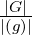

For a better reading experience, consider viewing the PDF.
In this short project we will prove Fermat’s little theorem using basic group theory. Only the fundamentals of group theory and modular arithmetic are needed to understand this proof. Any other ideas, such as Euler’s totient function, are given.
Juxtaposing the name of the famous theorem by Fermat, the result is the following.
Theorem (Fermat’s little theorem). Let p be a prime number. For any a ∈ℤ,
The original result, which Fermat sent in a letter to his friend in October 1640, is slightly different; he only considers the case where a is not divisible by p, and he did not prove his assertion in the letter. The first published proof of the general result was written by Euler in 1736, though a proof by Leibniz has been dated earlier in some unpublished manuscripts.
To prove the theorem, we need to know a few results. All of these are common in any introductory course in group theory, and are among the first concepts a new student learns.
Lemma. Let G be a finite group with subgroup H, and let g ∈ G. Then
Proof. The first part of this lemma is Lagrange’s theorem, which we will not prove here. The second result is true since if k = , then g|G| = g|(g)|k = ek = e.∗ □
Modular arithmetic is needed to understand the proof, though not anything someone with a brief familiarity would not understand. We provide Bézout’s identity as a reminder, but do not prove it. We will use this lemma to show that every element in the group we will construct has an inverse.
Lemma (Bézout’s identity). Let a and b be integers, and let d = (a,b), the greatest common divisor of a and b. Then there exists u,v ∈ℤ such that au + bv = d.
We define a function next, whose purpose is to make notation easier for us later. This function is interesting in it’s own right, and readers can learn more about it from it’s Wikipedia page.
Definition (Euler’s totient function). Let ϕ : ℤ+ →ℤ+ be a function which maps a positive integer to the number of positive integers less than or equal to it, which are also relatively prime to it. In other words, for any n ∈ℤ+,
For example, 1ϕ = 1, since it is only relatively prime to itself, and 10ϕ = |{1, 3, 7, 9}| = 4. Notice that if p is prime, then pϕ = p − 1. This number will become the order of the group will be interested in.
Lemma. Let Nn = {x ∈ ℤ+ : (n,x) = 1 and x ≤ n}. This is a group with respect to multiplication modulo n.
Proof. To prove this is a group, we need to show
From now on, we will associate each integer x ∈ Nn with it’s equivalence class [x]. Let [x1], [x2] ∈ Nn, then [x1][x2] = [x1x2]. Since x1 and x2 share no prime factors with n, neither does x1x2, hence [x1x2] ∈ Nn. We have proved (1). For (2), note that [1] ∈ Nn, and for any x ∈ Nn, [x1][1] = [1][x1] = [x1]. The associativity axiom in (3) is inherited from the regular multiplication in modular arithmetic.
To prove (4), we will use Bézout’s identity. Let [x] ∈ Nn. Then we can find u,v ∈ℤ such that xu + nv = 1, since (x,n) = 1. Rearranging, we get 1 − xu = nv, which implies that xu ≡ 1 (mod n). We have shown that there exists an integer u such that [x][u] = 1, so to complete the proof, we need to show that u is relatively prime to n. If u was not relatively prime to n, then we can find a prime p such that u = pu′ and n = pn′. Then p(xu′ + nv′) = 1, but as p > 1, this is impossible. Therefore (n,u) = 1 and [u] ∈ Nn.† □
The proof of Fermat’s little theorem now comes by combining what we have discussed.
Proof of Fermat’s little theorem. Let p be a prime. Then Np is a group of order pϕ = p− 1. For any integer a which is relatively prime to p, [a] ∈ Np, and therefore [a]pϕ = [a]p−1 = [1]. This is equivalent to writing ap−1 ≡ 1 (mod p). Since a ≡ a (mod p), we get ap ≡ a (mod p). Finally, if a is not relatively prime to p, then a ≡ 0 (mod p), which means that ap ≡ 0 (mod p), and combining these gives ap ≡ a (mod p). □